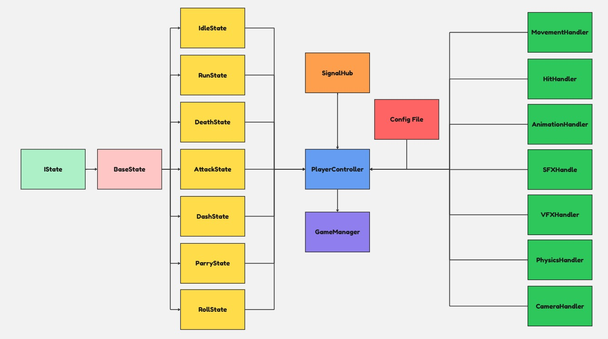

Hallowfall is my most recent Unity project, a 2D roguelike inspired by soulslike games. I chose the roguelike genre because it's well suited for a solo developer. Its reusable content and system driven design present both creative opportunities and meaningful programming challenges. This project has been the perfect opportunity to establish the groundwork for core systems. My initial goals were to refine existing mechanics, improve code maintainability, and build a scalable foundation for roguelike gameplay. From procedural world to diverse abilities and adaptive enemy AI, I'm hoping that one day the game grows into a rich and challenging experience.
To handle growing complexity around the player character, I designed a scalable, state driven architecture centered on a Finite State Machine (FSM) managed by a PlayerController. The system emphasized clean separation of concerns and event driven communication, ensuring that each behavior existed in an isolated state while remaining decoupled, extensible, and responsive.
public interface IEntityState
{
void EnterState();
void ExitState();
void FrameUpdate();
void PhysicsUpdate();
}
public class PlayerState : IEntityState
{
protected PlayerStateEnum stateEnum;
protected PlayerController playerController;
protected PlayerConfig playerConfig;
protected PlayerStateMachine stateMachine;
protected PlayerSignalHub signalHub;
public PlayerState(PlayerController playerController, PlayerStateMachine stateMachine, PlayerConfig playerConfig, PlayerStateEnum stateEnum)
{
this.playerController = playerController;
this.stateMachine = stateMachine;
this.playerConfig = playerConfig;
this.stateEnum = stateEnum;
this.signalHub = playerController.PlayerSignalHub;
}
public virtual void EnterState() { }
public virtual void ExitState() { }
public virtual void FrameUpdate() { }
public virtual void PhysicsUpdate() { }
}
public class PlayerParryState : PlayerState
{
private PlayerParryShield parryShield;
private AudioClip[] parrySFX;
private float parryWindow;
private bool isParrySuccessful = false;
private bool canCounterParry = true;
private bool canParryProjectiles = false;
public bool CanCounterParry { get => canCounterParry; set => canCounterParry = value; }
public bool CanParryProjectiles { get => canParryProjectiles; set => canParryProjectiles = value; }
public PlayerParryState(PlayerController playerController, PlayerStateMachine stateMachine, PlayerConfig playerConfig, PlayerStateEnum stateEnum)
: base(playerController, stateMachine, playerConfig, stateEnum)
{
parrySFX = playerConfig.parrySFX;
parryWindow = playerConfig.parryWindow;
parryShield = playerController.ParryShield;
signalHub.OnActivatingParryShield += ActivateParryShield;
signalHub.OnEnemyParried += OnSuccessfulParry;
signalHub.OnParryEnd += OnParryHoldAnimEnd;
}
public override void EnterState()
{
playerController.IsParrying = true;
StartParry();
}
public override void ExitState()
{
playerController.IsParrying = false;
isParrySuccessful = false;
}
private void StartParry()
{
signalHub.OnTurningToMousePos?.Invoke();
signalHub.OnAnimBool?.Invoke("isParrying", true);
playerController.CoroutineRunner.RunCoroutine(StopParryCoroutine());
}
private IEnumerator StopParryCoroutine()
{
yield return new WaitForSeconds(parryWindow);
OnParryHoldAnimEnd();
}
private void OnParryHoldAnimEnd()
{
parryShield.BoxCollider.enabled = false;
if (!isParrySuccessful)
{
signalHub.OnAnimBool?.Invoke("isParrying", false);
signalHub.OnAnimBool?.Invoke("isParrySuccessful", false);
signalHub.OnStateTransitionBasedOnMovement?.Invoke(PlayerStateEnum.Parry);
}
else isParrySuccessful = false;
}
private void ActivateParryShield()
{
parryShield.BoxCollider.enabled = true;
}
private void OnSuccessfulParry(EnemyController enemyController, float parryDamage)
{
parryShield.BoxCollider.enabled = false;
signalHub.OnPlayRandomSFX?.Invoke(parrySFX, 1f);
if (CanCounterParry)
{
isParrySuccessful = true;
signalHub.OnAnimBool?.Invoke("isParrySuccessful", true);
}
}
}
public class PlayerController : MonoBehaviour
{
private void Start()
{
InitStats();
InjectDependencies();
stateMachine = new PlayerStateMachine(this);
stateMachine.InitAllStates();
GameManager.Instance.InitSkillsFromSkillTree();
}
private void Update()
{
stateMachine.CurrentState?.FrameUpdate();
ManageTimers();
}
private void FixedUpdate()
{
stateMachine.CurrentState?.PhysicsUpdate();
}
private void InjectDependencies()
{
playerInputHandler.Init(this);
playerMovementHandler.Init(this);
playerHealthBarHandler.Init(this);
playerHitHandler.Init(this);
playerAnimationHandler.Init(this);
playerSFXHandler.Init(this);
playerVFXHandler.Init(this);
}
public void OnMoveInput(Vector2 dir)
{
playerMovementHandler.SetMovementInputDirection(dir);
}
public void OnSwordAttackInput()
{
signalHub.OnChangeState?.Invoke(PlayerStateEnum.SwordAttack);
stateMachine.PlayerSwordAttackState.TrySwordAttack();
}
public void OnDashInput()
{
if (CanDash) signalHub.OnChangeState?.Invoke(PlayerStateEnum.Dash);
}
public void OnParryInput()
{
if (!isRolling && !isParrying)
signalHub.OnChangeState?.Invoke(PlayerStateEnum.Parry);
}
public void OnRollInput()
{
if (!isRolling && canRoll)
signalHub.OnChangeState?.Invoke(PlayerStateEnum.Roll);
}
}
public class PlayerSFXHandler : MonoBehaviour, IInitializeable<PlayerController>
{
private AudioManager audioManager;
private PlayerController playerController;
private AudioClip[] groundRunSFX;
private AudioClip[] grassRunSFX;
private AudioClip[] stoneRunSFX;
public void Init(PlayerController playerController)
{
this.playerController = playerController;
audioManager = AudioManager.Instance;
groundRunSFX = playerController.PlayerConfig.groundSFX;
grassRunSFX = playerController.PlayerConfig.grassSFX;
stoneRunSFX = playerController.PlayerConfig.stoneSFX;
playerController.PlayerSignalHub.OnPlayerStep += PlayStepSound;
playerController.PlayerSignalHub.OnPlaySFX += PlaySFX;
playerController.PlayerSignalHub.OnPlayRandomSFX += PlayRandomSFX;
}
private void OnDisable()
{
playerController.PlayerSignalHub.OnPlayerStep -= PlayStepSound;
playerController.PlayerSignalHub.OnPlaySFX -= PlaySFX;
playerController.PlayerSignalHub.OnPlayRandomSFX -= PlayRandomSFX;
}
private void PlaySFX(AudioClip audioClip, float volume)
{
audioManager.PlaySFX(audioClip, playerController.GetPlayerPos(), volume);
}
private void PlayRandomSFX(AudioClip[] audioClip, float volume)
{
audioManager.PlaySFX(audioClip, playerController.GetPlayerPos(), volume);
}
private void PlayStepSound()
{
switch (playerController.CurrentFloorType)
{
case FloorTypeEnum.Ground: PlayRandomSFX(groundRunSFX, 0.25f); break;
case FloorTypeEnum.Grass: PlayRandomSFX(grassRunSFX, 0.25f); break;
case FloorTypeEnum.Stone: PlayRandomSFX(stoneRunSFX, 0.25f); break;
}
}
}

The Procedural World Generation System is implemented using a dynamic zone based architecture, where the game world is divided into manageable zones that are procedurally generated, activated, and deactivated based on player proximity. Each zone is responsible for generating terrain, props, and gameplay elements according to defined profiles and procedural rules. The core idea revolves around a ZoneManager for high level management and a ZoneHandler for zone specific generation.
[RequireComponent(typeof(CTicker))]
public class ZoneManager : MonoBehaviour
{
public static ZoneManager Instance { get; private set; }
[SerializeField] private int zoneSize = 40;
[SerializeField] private int zoneCellSize = 1;
[SerializeField] private float zoneBuffer = 25;
[SerializeField] private GameObject zonePrefab;
[SerializeField] private GameObject mainGrid;
[SerializeField] private Tilemap zoneConnectingGround;
[SerializeField] private ZoneLayoutProfile zoneLayoutProfile;
private GameObject player;
private int halfZoneSize;
private CTicker cTicker;
public Tilemap ZoneConnectingGround => zoneConnectingGround;
public Dictionary<Vector2Int, ZoneData> GeneratedZonesDic { get => generatedZonesDic; }
private Dictionary<Vector2Int, ZoneData> generatedZonesDic = new();
private void Awake()
{
if (Instance != null && Instance != this) { Destroy(gameObject); return; }
Instance = this;
cTicker = GetComponent<CTicker>();
halfZoneSize = zoneSize / 2;
}
private void Start()
{
player = GameManager.Instance.Player;
cTicker.CanTick = true;
TryGenerateZone(Vector2Int.zero, DirectionEnum.None);
cTicker.OnTickEvent += CheckForPlayerEdgeProximity;
}
private void TryGenerateZone(Vector2Int centerCoord, DirectionEnum expansionDir)
{
if (generatedZonesDic.ContainsKey(centerCoord)) return;
Vector3Int newZoneWorldPos = FindZoneCenterPosition(centerCoord);
GameObject newZoneGO = Instantiate(zonePrefab, newZoneWorldPos, Quaternion.identity, mainGrid.transform);
var zoneData = new ZoneData(zoneCellSize, zoneSize, zoneSize, centerCoord, newZoneWorldPos, newZoneGO, expansionDir, zoneLayoutProfile);
generatedZonesDic.Add(centerCoord, zoneData);
var zoneHandler = newZoneGO.GetComponent<ZoneHandler>();
zoneHandler.Init(zoneData);
}
}
The Enemy AI System mirrors the Player Architecture in its overall design, built on a foundation of Finite State Machine (FSM) control, event driven communication, modular components, and isolated systems. The key difference is in the way state transitions happen: enemies react to real time data such as player proximity, health thresholds, or environmental conditions, rather than relying on direct input handlers like the player.
public class EnemyAttackState : EnemyState
{
private EnemySignalHub signalHub;
private float attackDelay;
private List<BaseEnemyAbilitySO> abilityList;
private List<BaseEnemyAbilitySO> availaleAbilityList;
private BaseEnemyAbilitySO currentAbility;
public EnemyAttackState(EnemyController enemyController, EnemyStateMachine stateMachine, EnemyStateEnum stateEnum)
: base(enemyController, stateMachine, stateEnum)
{
signalHub = enemyController.SignalHub;
abilityList = enemyController.GetListOfAllAbilities();
availaleAbilityList = new List<BaseEnemyAbilitySO>(abilityList);
currentAbility = MyUtils.GetRandomRef<BaseEnemyAbilitySO>(availaleAbilityList);
signalHub.OnAbilityFinished += (value) => { EndAttack(); };
signalHub.OnAbilityStart += SetupNextAbility;
}
public override void EnterState()
{
if (enemyController.IsAttackDelayOver && availaleAbilityList.Count > 0)
{
enemyController.CanMove = false;
enemyController.CanAttack = false;
enemyController.IsAttacking = true;
signalHub.OnAbilityStart.Invoke(currentAbility);
enemyController.CoroutineRunner.RunCoroutine(PutAbilityOnCooldownCoroutine(currentAbility));
}
else stateMachine.ChangeState(EnemyStateEnum.Idle);
}
public override void ExitState()
{
enemyController.CanMove = true;
enemyController.CanAttack = true;
enemyController.IsAttacking = false;
currentAbility?.EndAbility(enemyController);
}
public bool CanChangeToAttackState()
{
return IsEnemyInAttackRange() && IsEnemyAbleToAttack() && currentAbility != null;
}
}
public class EnemyMeleeStrike : BaseEnemyAbilitySO
{
public EnemyAttackZone attackZonePrefab;
private EnemyAttackZone attackZone;
public int strikeDamage;
public int parryDamage;
public override void ExecuteAbility(EnemyController enemy)
{
enemy.SignalHub.OnAnimBool?.Invoke(animCondition, true);
attackZone = Instantiate(attackZonePrefab, enemy.GetEnemyPos(), Quaternion.identity);
SetupAttackZone(attackZone.gameObject, enemy);
attackZone.Init(new EnemyMeleeStrikeData { owner = enemy, strikeDamage = this.strikeDamage, parryDamage = this.parryDamage });
enemy.SignalHub.OnPlayRandomSFX?.Invoke(abilitySFX, 0.075f);
}
public override void ActionOnAnimFrame(EnemyController enemy)
{
if (attackZone != null)
{
attackZone.TryHitTarget(enemy);
attackZone = null;
}
}
public override void EndAbility(EnemyController enemy)
{
enemy.SignalHub.OnAnimBool?.Invoke(animCondition, false);
}
}
The Enemy Pathfinding has evolved with the game. Initially, I used the built in Unity NavMesh to handle enemy pathfinding. However, after completing the first iteration of the World Generation System, I realized that NavMesh would need to be baked at runtime dynamically, causing noticeable performance issues. After exploring some workarounds, I developed a custom pathfinding system using Flow Field Pathfinding. By modifying my CellGrid system from the World Generation section, I successfully integrated the new pathfinding solution.
public class FlowFieldGenerator
{
private const int COST_UNVISITED = (int)CellFlowCost.unVisited;
private const int COST_UNWALKABLE = (int)CellFlowCost.unWalkable;
private const int COST_TARGET = (int)CellFlowCost.target;
public void GenerateFlowFieldOnTargetZone(CellGrid cellGrid, Vector3 targetPos)
{
Queue<Cell> flowFieldCellQueue = new();
Cell currentFieldTargetCell = cellGrid.GetCellFromWorldPos(targetPos);
SetInitialBaseFlowCosts(cellGrid, currentFieldTargetCell, flowFieldCellQueue);
ApplyCostsForPlayerZone(flowFieldCellQueue, currentFieldTargetCell);
AssignFlowAllDirectionsOnPlayerZone(cellGrid);
}
private void SetInitialBaseFlowCosts(CellGrid cellGrid, Cell targetCell, Queue<Cell> flowFieldCellQueue)
{
cellGrid.LoopOverGrid((i, j) =>
{
Cell currentCell = cellGrid.Cells[i, j];
currentCell.BaseCost = currentCell.IsWalkable ? COST_UNVISITED : COST_UNWALKABLE;
});
targetCell.BaseCost = COST_TARGET;
flowFieldCellQueue.Enqueue(targetCell);
}
}
private void FindNextMovementDirection()
{
flowRequestTimer += Time.deltaTime;
if (flowRequestTimer >= flowRequestDelay || hasNotBeenOnFlow)
{
lastCell = zoneManager.FindCurrentCellFromWorldPos(lastPos);
currentCell = zoneManager.FindCurrentCellFromWorldPos(enemyController.transform.position);
Vector2 newDir = (flowFieldManager.RequestNewFlowDir(currentCell, lastCell)
+ CalculateRepulsionForce()).normalized;
if (newDir != Vector2.zero)
{
nextMoveDir = newDir;
lastPos = enemyTransform.position;
hasNotBeenOnFlow = false;
flowRequestTimer = 0;
}
}
}
private Vector2 CalculateRepulsionForce()
{
Vector2 repulsion = Vector2.zero;
float repulsionStrength = 0.2f;
float detectionRadius = 1.0f;
foreach (EnemyController otherEnemy in enemyController.Detector.DetectNearbyGenericTargetsOnParent<EnemyController>(
"EnemyCollider", enemyController.GetEnemyPos(), layerMask, detectionRadius))
{
if (otherEnemy == enemyController) continue;
Vector2 diff = (Vector2)(transform.position - otherEnemy.transform.position);
float distance = diff.magnitude;
if (distance < detectionRadius && distance > 0.01f)
repulsion += diff.normalized / distance;
}
return repulsion * repulsionStrength;
}